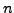

Next: Bibliography Up: Evaluation of a locomotion Previous: 2 Algorithm execution time


Next: Bibliography
Up: Evaluation
of a locomotion Previous: 2
Algorithm execution time
The worm like-robot locomotion can be realized by means of the propagation of waves through the body of the robot. The algorithm generates the gait control tables from the wave applied. The gait recalculation time is the key parameter in order to achieve an autonomous robot with real-time reactions.
The algorithm has been
successfully implemented and executed on three different
embedded processors in FPGA: LEON2, MicroBlaze and PowerPC. The GRT
has been measured in four architectures, as a function of

The LEON2 with an FPU is a very good option when a low GRT is required. In not critical applications the use of the MicroBlaze saves about the 75% of the area, leaving this percentage free for the implementation of new hardware cores.
The current worm like-robot prototype, ``Cube Revolutions'', can only move on a straight line. The movement on a plane will be studied in further works. The same locomotion algorithm will be used, but calculating two gait control tables from two different waves: one for the articulations in the plane parallel to the ground and the other in the perpendicular plane. The final locomotion will be generated as a composition of the two waves.


Next: Bibliography
Up: Evaluation
of a locomotion Previous: 2
Algorithm execution time